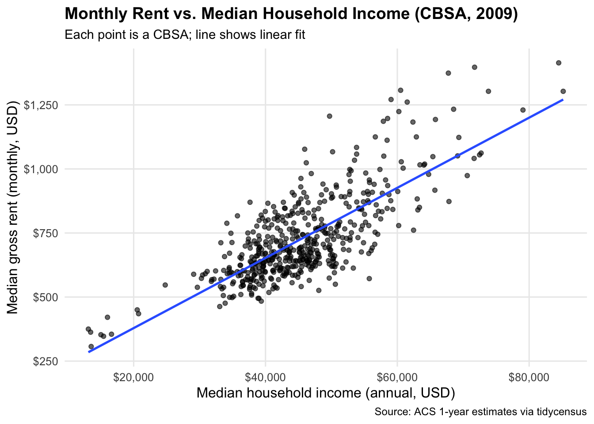
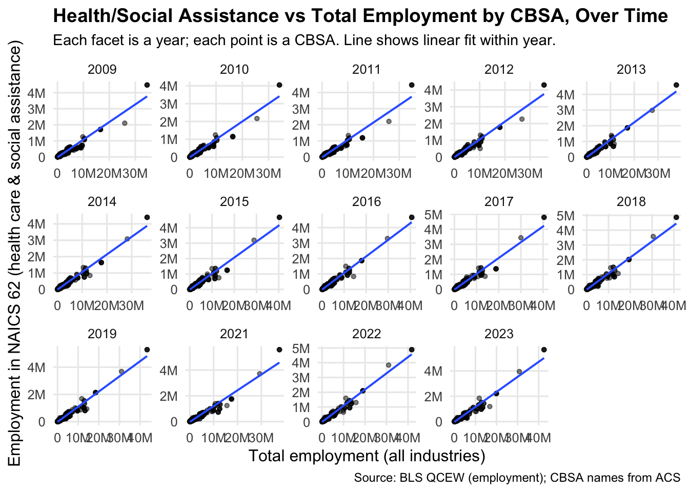
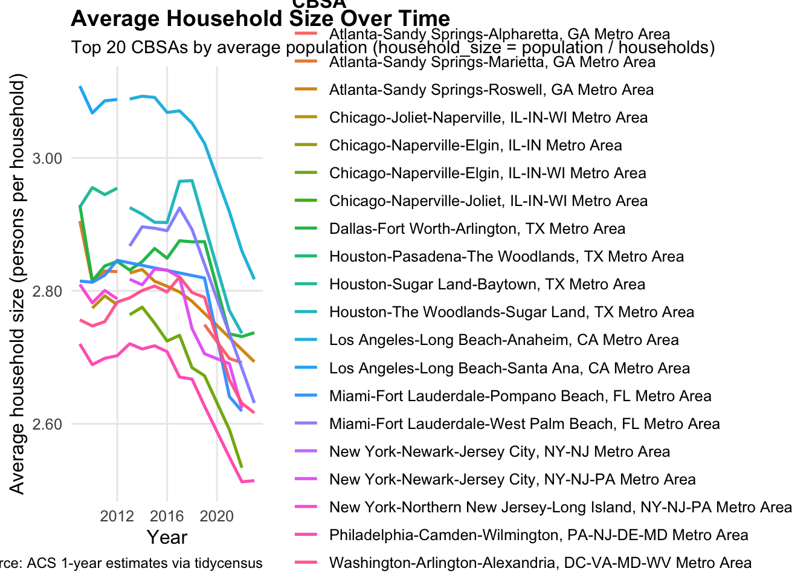
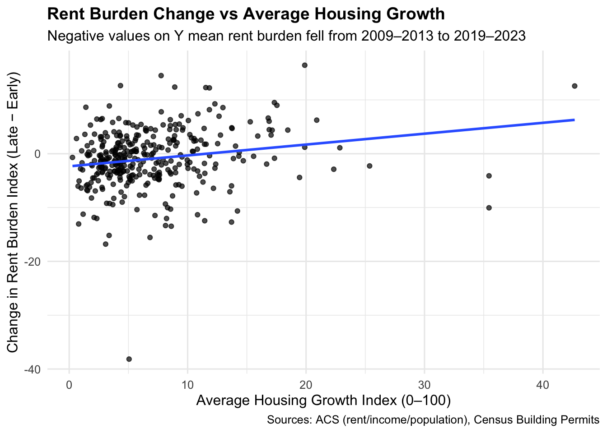
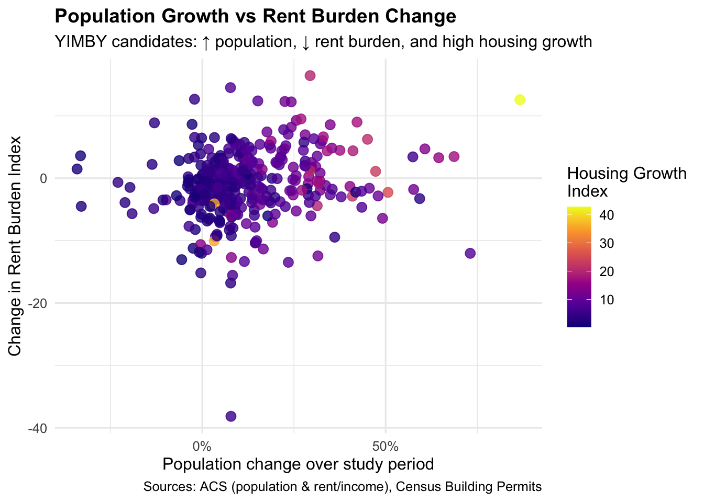

Mini-Project 02 - Making Backyards Affordable for All
Author
rohansamavedam
1 Introduction
In this mini-project, I explore the intersection of housing affordability and urban development across U.S. metropolitan areas using official datasets from the U.S. Census Bureau and the Bureau of Labor Statistics (BLS). The analysis combines income, rent, population, and housing construction data to measure how local housing policies and economic conditions influence rent pressure and living standards. By cleaning, integrating, and visualizing multi-source datasets, this project highlights the economic and social dynamics shaping American cities from 2009 to 2023.
The core objective is to build meaningful metrics of affordability and growth—specifically, the Rent Burden Index and the Housing Growth Index—to identify which metro areas have successfully expanded housing while keeping rents stable. These findings serve as both a data-driven foundation for evidence-based policymaking and a practical framework for advocating YIMBY (“Yes In My Backyard”) housing initiatives that make urban living more equitable and sustainable.
2 Data Acquisition and Preparation
This code gets its data directly from the U.S. Census Bureau using the tidycensus package, which connects to the American Community Survey (ACS). It automatically downloads official Census data on median income, rent, population, and household counts for every U.S. metro area (CBSA) from 2009 to 2023 (excluding 2020, when no survey was done).
Code
if(!dir.exists(file.path("data", "mp02"))){dir.create(file.path("data", "mp02"), showWarnings=FALSE, recursive=TRUE)}library <-function(pkg){## Mask base::library() to automatically install packages if needed## Masking is important here so downlit picks up packages and links## to documentation pkg <-as.character(substitute(pkg))options(repos =c(CRAN ="https://cloud.r-project.org"))if(!require(pkg, character.only=TRUE, quietly=TRUE)) install.packages(pkg)stopifnot(require(pkg, character.only=TRUE, quietly=TRUE))}library(tidyverse)
── Attaching core tidyverse packages ──────────────────────── tidyverse 2.0.0 ──
✔ dplyr 1.1.4 ✔ readr 2.1.5
✔ forcats 1.0.0 ✔ stringr 1.5.1
✔ ggplot2 3.5.2 ✔ tibble 3.3.0
✔ lubridate 1.9.4 ✔ tidyr 1.3.1
✔ purrr 1.1.0
── Conflicts ────────────────────────────────────────── tidyverse_conflicts() ──
✖ dplyr::filter() masks stats::filter()
✖ dplyr::lag() masks stats::lag()
ℹ Use the conflicted package (<http://conflicted.r-lib.org/>) to force all conflicts to become errors
Code
library(glue)library(readxl)library(tidycensus)get_acs_all_years <-function(variable, geography="cbsa",start_year=2009, end_year=2023){ fname <-glue("{variable}_{geography}_{start_year}_{end_year}.csv") fname <-file.path("data", "mp02", fname)if(!file.exists(fname)){ YEARS <-seq(start_year, end_year) YEARS <- YEARS[YEARS !=2020] # Drop 2020 - No survey (covid) ALL_DATA <-map(YEARS, function(yy){ tidycensus::get_acs(geography, variable, year=yy, survey="acs1") |>mutate(year=yy) |>select(-moe, -variable) |>rename(!!variable := estimate) }) |>bind_rows()write_csv(ALL_DATA, fname) }read_csv(fname, show_col_types=FALSE)}# Household income (12 month)INCOME <-get_acs_all_years("B19013_001") |>rename(household_income = B19013_001)# Monthly rentRENT <-get_acs_all_years("B25064_001") |>rename(monthly_rent = B25064_001)# Total populationPOPULATION <-get_acs_all_years("B01003_001") |>rename(population = B01003_001)# Total number of householdsHOUSEHOLDS <-get_acs_all_years("B11001_001") |>rename(households = B11001_001)
This code downloads data from the U.S. Census Bureau’s Building Permits Survey, which tracks the number of new housing units approved for construction each year. It processes both older text files and newer Excel files from the Census website, combines them into one dataset for all metro areas, and saves it locally for later analysis.
This code downloads and cleans the official industry classification data from the U.S. Bureau of Labor Statistics (BLS) using the NAICS system. It organizes industries into readable categories (like Manufacturing or Retail) and saves them locally, so later analyses can link job and wage data to specific sectors across metro areas.
Code
library(httr2)library(rvest)
Attaching package: 'rvest'
The following object is masked from 'package:readr':
guess_encoding
Code
get_bls_industry_codes <-function(){ fname <-file.path("data", "mp02", "bls_industry_codes.csv")library(dplyr)library(tidyr)library(readr)if(!file.exists(fname)){ resp <-request("https://www.bls.gov") |>req_url_path("cew", "classifications", "industry", "industry-titles.htm") |>req_headers(`User-Agent`="Mozilla/5.0 (Macintosh; Intel Mac OS X 10.15; rv:143.0) Gecko/20100101 Firefox/143.0") |>req_error(is_error = \(resp) FALSE) |>req_perform()resp_check_status(resp) naics_table <-resp_body_html(resp) |>html_element("#naics_titles") |>html_table() |>mutate(title =str_trim(str_remove(str_remove(`Industry Title`, Code), "NAICS"))) |>select(-`Industry Title`) |>mutate(depth =if_else(nchar(Code) <=5, nchar(Code) -1, NA)) |>filter(!is.na(depth))# These were looked up manually on bls.gov after finding # they were presented as ranges. Since there are only three# it was easier to manually handle than to special-case everything else naics_missing <- tibble::tribble(~Code, ~title, ~depth, "31", "Manufacturing", 1,"32", "Manufacturing", 1,"33", "Manufacturing", 1,"44", "Retail", 1, "45", "Retail", 1,"48", "Transportation and Warehousing", 1, "49", "Transportation and Warehousing", 1 ) naics_table <-bind_rows(naics_table, naics_missing) naics_table <- naics_table |>filter(depth ==4) |>rename(level4_title=title) |>mutate(level1_code =str_sub(Code, end=2), level2_code =str_sub(Code, end=3), level3_code =str_sub(Code, end=4)) |>left_join(naics_table, join_by(level1_code == Code)) |>rename(level1_title=title) |>left_join(naics_table, join_by(level2_code == Code)) |>rename(level2_title=title) |>left_join(naics_table, join_by(level3_code == Code)) |>rename(level3_title=title) |>select(-starts_with("depth")) |>rename(level4_code = Code) |>select(level1_title, level2_title, level3_title, level4_title, level1_code, level2_code, level3_code, level4_code) |>drop_na() |>mutate(across(contains("code"), as.integer))write_csv(naics_table, fname) }read_csv(fname, show_col_types=FALSE)}INDUSTRY_CODES <-get_bls_industry_codes()
This code downloads and processes employment and wage data from the Bureau of Labor Statistics (BLS) Quarterly Census of Employment and Wages (QCEW). It compiles yearly data (2009–2023, excluding 2020) for each metro area and industry, calculates average wages, and saves everything into one clean dataset for later analysis.
Code
library(httr2)library(rvest)get_bls_qcew_annual_averages <-function(start_year=2009, end_year=2023){ fname <-glue("bls_qcew_{start_year}_{end_year}.csv.gz") fname <-file.path("data", "mp02", fname) YEARS <-seq(start_year, end_year) YEARS <- YEARS[YEARS !=2020] # Drop Covid year to match ACSif(!file.exists(fname)){ ALL_DATA <-map(YEARS, .progress=TRUE, possibly(function(yy){ fname_inner <-file.path("data", "mp02", glue("{yy}_qcew_annual_singlefile.zip"))if(!file.exists(fname_inner)){request("https://www.bls.gov") |>req_url_path("cew", "data", "files", yy, "csv",glue("{yy}_annual_singlefile.zip")) |>req_headers(`User-Agent`="Mozilla/5.0 (Macintosh; Intel Mac OS X 10.15; rv:143.0) Gecko/20100101 Firefox/143.0") |>req_retry(max_tries=5) |>req_perform(fname_inner) }if(file.info(fname_inner)$size <755e5){warning(sQuote(fname_inner), "appears corrupted. Please delete and retry this step.") }read_csv(fname_inner, show_col_types=FALSE) |>mutate(YEAR = yy) |>select(area_fips, industry_code, annual_avg_emplvl, total_annual_wages, YEAR) |>filter(nchar(industry_code) <=5, str_starts(area_fips, "C")) |>filter(str_detect(industry_code, "-", negate=TRUE)) |>mutate(FIPS = area_fips, INDUSTRY =as.integer(industry_code), EMPLOYMENT =as.integer(annual_avg_emplvl), TOTAL_WAGES = total_annual_wages) |>select(-area_fips, -industry_code, -annual_avg_emplvl, -total_annual_wages) |># 10 is a special value: "all industries" , so omitfilter(INDUSTRY !=10) |>mutate(AVG_WAGE = TOTAL_WAGES / EMPLOYMENT) })) |>bind_rows()write_csv(ALL_DATA, fname) } ALL_DATA <-read_csv(fname, show_col_types=FALSE) ALL_DATA_YEARS <-unique(ALL_DATA$YEAR) YEARS_DIFF <-setdiff(YEARS, ALL_DATA_YEARS)if(length(YEARS_DIFF) >0){stop("Download failed for the following years: ", YEARS_DIFF, ". Please delete intermediate files and try again.") } ALL_DATA}WAGES <-get_bls_qcew_annual_averages()
3 Exploratory Analysis
Lets preview the major tables we have using the head() function. The order of the tables are as follows: INCOME, RENT, POPULATION, HOUSEHOLDS, PERMITS, INDUSTRY_CODES, WAGES.
Code
head(INCOME)
# A tibble: 6 × 4
GEOID NAME household_income year
<dbl> <chr> <dbl> <dbl>
1 10140 Aberdeen, WA Micro Area 36345 2009
2 10180 Abilene, TX Metro Area 42931 2009
3 10300 Adrian, MI Micro Area 45640 2009
4 10380 Aguadilla-Isabela-San Sebasti?n, PR Metro Area 13470 2009
5 10420 Akron, OH Metro Area 47482 2009
6 10500 Albany, GA Metro Area 36218 2009
Code
head(RENT)
# A tibble: 6 × 4
GEOID NAME monthly_rent year
<dbl> <chr> <dbl> <dbl>
1 10140 Aberdeen, WA Micro Area 650 2009
2 10180 Abilene, TX Metro Area 712 2009
3 10300 Adrian, MI Micro Area 645 2009
4 10380 Aguadilla-Isabela-San Sebasti?n, PR Metro Area 363 2009
5 10420 Akron, OH Metro Area 723 2009
6 10500 Albany, GA Metro Area 624 2009
Code
head(POPULATION)
# A tibble: 6 × 4
GEOID NAME population year
<dbl> <chr> <dbl> <dbl>
1 10140 Aberdeen, WA Micro Area 71797 2009
2 10180 Abilene, TX Metro Area 160266 2009
3 10300 Adrian, MI Micro Area 99837 2009
4 10380 Aguadilla-Isabela-San Sebasti?n, PR Metro Area 342495 2009
5 10420 Akron, OH Metro Area 699935 2009
6 10500 Albany, GA Metro Area 164238 2009
Code
head(HOUSEHOLDS)
# A tibble: 6 × 4
GEOID NAME households year
<dbl> <chr> <dbl> <dbl>
1 10140 Aberdeen, WA Micro Area 27759 2009
2 10180 Abilene, TX Metro Area 58052 2009
3 10300 Adrian, MI Micro Area 36835 2009
4 10380 Aguadilla-Isabela-San Sebasti?n, PR Metro Area 91805 2009
5 10420 Akron, OH Metro Area 281769 2009
6 10500 Albany, GA Metro Area 60101 2009
# A tibble: 1 × 2
year total_permits
<dbl> <dbl>
1 2021 4021
3.0.3 3. Which state (not CBSA) had the highest average individual income in 2015? To answer this question, you will need to first compute the total income per CBSA by multiplying the average household income by the number of households, and then sum total income and total population across all CBSAs in a state. With these numbers, you can answer this question.
Code
cbsa_state_lu <- POPULATION %>%distinct(GEOID, NAME) %>%mutate(state =str_extract(NAME, ", (.{2})", group =1) # primary state abbrev for multi-state CBSAs ) %>%select(GEOID, state)inc_2015 <- INCOME %>%filter(year ==2015) %>%select(GEOID, household_income)hh_2015 <- HOUSEHOLDS %>%filter(year ==2015) %>%select(GEOID, households)pop_2015 <- POPULATION %>%filter(year ==2015) %>%select(GEOID, population)cbsa_income_2015 <- inc_2015 %>%inner_join(hh_2015, by ="GEOID") %>%inner_join(pop_2015, by ="GEOID") %>%inner_join(cbsa_state_lu, by ="GEOID") %>%mutate(total_income_cbsa = household_income * households)state_df <-data.frame(abb =c(state.abb, "DC", "PR"),name =c(state.name, "District of Columbia", "Puerto Rico"),stringsAsFactors =FALSE)state_income_2015 <- cbsa_income_2015 %>%group_by(state) %>%summarise(total_income_state =sum(total_income_cbsa, na.rm =TRUE),total_population_state =sum(population, na.rm =TRUE),.groups ="drop" ) %>%mutate(avg_individual_income = total_income_state / total_population_state)state_income_named_2015 <- state_income_2015 %>%left_join(state_df, by =c("state"="abb")) %>%select(state_abbrev = state, state_name = name, avg_individual_income, total_income_state, total_population_state) %>%arrange(desc(avg_individual_income))state_income_named_2015 %>%slice_head(n =1)
# A tibble: 1 × 5
state_abbrev state_name avg_individual_income total_income_state
<chr> <chr> <dbl> <dbl>
1 DC District of Columbia 33233. 202663489140
# ℹ 1 more variable: total_population_state <dbl>
3.0.4 4. Data scientists and business analysts are recorded under NAICS code 5182. What is the last year in which the NYC CBSA had the most data scientists in the country? In recent, the San Francisco CBSA has had the most data scientists.
Warning in inner_join(., cbsa_lookup, by = "CBSA"): Detected an unexpected many-to-many relationship between `x` and `y`.
ℹ Row 2 of `x` matches multiple rows in `y`.
ℹ Row 2 of `y` matches multiple rows in `x`.
ℹ If a many-to-many relationship is expected, set `relationship =
"many-to-many"` to silence this warning.
# A tibble: 1 × 3
YEAR NAME EMPLOYMENT
<dbl> <chr> <dbl>
1 2015 New York-Northern New Jersey-Long Island, NY-NJ-PA Metro Area 18922
3.0.5 5. What fraction of total wages in the NYC CBSA was earned by people employed in the finance and insurance industries (NAICS code 52)? In what year did this fraction peak?
3.0.6 Visualization 1: The relationship between monthly rent and average household income per CBSA in 2009.
Code
rent_income_2009 <- INCOME %>%filter(year ==2009) %>%select(GEOID, NAME, household_income) %>%inner_join( RENT %>%filter(year ==2009) %>%select(GEOID, monthly_rent),by ="GEOID" )theme_pub <-function() { ggplot2::theme_minimal(base_size =12) + ggplot2::theme(plot.title = ggplot2::element_text(face ="bold", size =14),plot.subtitle = ggplot2::element_text(size =11),plot.caption = ggplot2::element_text(size =9),legend.position ="none",panel.grid.minor = ggplot2::element_blank() )}ggplot2::ggplot(rent_income_2009, ggplot2::aes(x = household_income, y = monthly_rent)) + ggplot2::geom_point(alpha =0.6) + ggplot2::geom_smooth(method ="lm", se =FALSE, linewidth =0.9) + ggplot2::scale_x_continuous(labels = scales::label_dollar(accuracy =1)) + ggplot2::scale_y_continuous(labels = scales::label_dollar(accuracy =1)) + ggplot2::labs(title ="Monthly Rent vs. Median Household Income (CBSA, 2009)",subtitle ="Each point is a CBSA; line shows linear fit",x ="Median household income (annual, USD)",y ="Median gross rent (monthly, USD)",caption ="Source: ACS 1-year estimates via tidycensus" ) +theme_pub()
`geom_smooth()` using formula = 'y ~ x'

3.0.7 Visualization 2: The relationship between total employment and total employment in the health care and social services sector (NAICS 62) across different CBSAs.
Warning in inner_join(., cbsa_names, by = "CBSA"): Detected an unexpected many-to-many relationship between `x` and `y`.
ℹ Row 15 of `x` matches multiple rows in `y`.
ℹ Row 2 of `y` matches multiple rows in `x`.
ℹ If a many-to-many relationship is expected, set `relationship =
"many-to-many"` to silence this warning.
Code
theme_pub <-function() { ggplot2::theme_minimal(base_size =12) + ggplot2::theme(plot.title = ggplot2::element_text(face ="bold", size =14),plot.subtitle = ggplot2::element_text(size =11),plot.caption = ggplot2::element_text(size =9),panel.grid.minor = ggplot2::element_blank() )}ggplot2::ggplot(plot_df, ggplot2::aes(x = total_emp, y = hcsa_emp)) + ggplot2::geom_point(alpha =0.5, size =1.2) + ggplot2::geom_smooth(method ="lm", se =FALSE, linewidth =0.7) + ggplot2::facet_wrap(~ YEAR, ncol =5, scales ="free") + ggplot2::scale_x_continuous(labels = scales::label_number(scale_cut = scales::cut_short_scale()) ) + ggplot2::scale_y_continuous(labels = scales::label_number(scale_cut = scales::cut_short_scale()) ) + ggplot2::labs(title ="Health/Social Assistance vs Total Employment by CBSA, Over Time",subtitle ="Each facet is a year; each point is a CBSA. Line shows linear fit within year.",x ="Total employment (all industries)",y ="Employment in NAICS 62 (health care & social assistance)",caption ="Source: BLS QCEW (employment); CBSA names from ACS" ) +theme_pub()
`geom_smooth()` using formula = 'y ~ x'

3.0.8 Visualization 3: The evolution of average household size over time. Use different lines to represent different CBSAs.
Code
hhsize <- POPULATION %>%select(GEOID, NAME, year, population) %>%inner_join(HOUSEHOLDS %>%select(GEOID, year, households), by =c("GEOID", "year")) %>%mutate(household_size = population / households) %>%filter(is.finite(household_size), household_size >0)top_cbsa_geoids <- hhsize %>%group_by(GEOID, NAME) %>%summarise(avg_pop =mean(population, na.rm =TRUE), .groups ="drop") %>%arrange(desc(avg_pop)) %>%slice_head(n =20) %>%pull(GEOID)hhsize_top <- hhsize %>%filter(GEOID %in% top_cbsa_geoids)theme_pub <-function() { ggplot2::theme_minimal(base_size =12) + ggplot2::theme(plot.title = ggplot2::element_text(face ="bold", size =14),plot.subtitle = ggplot2::element_text(size =11),plot.caption = ggplot2::element_text(size =9),legend.title = ggplot2::element_text(face ="bold"),panel.grid.minor = ggplot2::element_blank() )}ggplot2::ggplot(hhsize_top, ggplot2::aes(x = year, y = household_size, group = NAME, color = NAME)) + ggplot2::geom_line(linewidth =0.9, alpha =0.95) + ggplot2::scale_y_continuous(labels = scales::label_number(accuracy =0.01)) + ggplot2::labs(title ="Average Household Size Over Time",subtitle ="Top 20 CBSAs by average population (household_size = population / households)",x ="Year",y ="Average household size (persons per household)",color ="CBSA",caption ="Source: ACS 1-year estimates via tidycensus" ) +theme_pub()

4 Building Indices of Housing Affordability and Housing Stock Growth
In this section, we created a Rent Burden Index to measure housing affordability across U.S. metro areas. By joining Census data on median rent and household income, we calculated how much of a typical household’s income goes toward rent and standardized it on a 0–100 scale (where 100 = highest burden).
We then displayed two tables:
New York CBSA Trend – showing how rent burden has changed over time in the NYC metro area.
Top & Bottom CBSAs – highlighting the 10 metro areas with the highest and lowest rent burdens in the most recent year.
Code
library(DT)rent_burden_df <- INCOME %>%inner_join(RENT, by =c("GEOID", "NAME", "year")) %>%mutate(rent_to_income = (monthly_rent *12) / household_income # annualized rent / annual income )rent_burden_df <- rent_burden_df %>%mutate(rent_burden_index =100* (rent_to_income -min(rent_to_income, na.rm =TRUE)) / (max(rent_to_income, na.rm =TRUE) -min(rent_to_income, na.rm =TRUE)) )nyc_rent_burden <- rent_burden_df %>%filter(str_detect(NAME, "New York")) %>%arrange(year)datatable( nyc_rent_burden %>%select(NAME, year, rent_to_income, rent_burden_index),caption ="Evolution of Rent Burden in the New York CBSA",options =list(pageLength =10, autoWidth =TRUE))
In this section, we measured how “building-friendly” each metro area (CBSA) is by comparing new housing construction to population size and growth.
We joined Census population data with building-permit data, calculated 5-year population growth for each CBSA, and built two metrics:
Instantaneous Growth Rate: new housing units permitted relative to the total population.
Rate-Based Growth: new permits relative to population growth over the past 5 years.
We then standardized both metrics on a 0–100 scale and averaged them into a Composite Housing Growth Index, which highlights cities that are expanding housing faster than others. Finally, we displayed tables of the CBSAs with the highest and lowest housing-growth scores for the latest year.
In this section, we summarized three key metrics for each metro area (CBSA):
Rent Burden Change – Difference between 2009–2013 and 2019–2023 averages
Population Growth – Overall percentage growth across the study period
Average Housing Growth Index – Mean housing-growth score from 2014 onward
After joining them by CBSA, we created two visualizations:
Rent Burden Change vs. Housing Growth – Cities permitting more housing tended to experience smaller rent increases.
Population Growth vs. Rent Burden Change – Highlights “YIMBY” cities with ↑ population, ↓ rent burden, and high housing growth.
Code
rb_summary <- rent_burden_df %>%group_by(GEOID, NAME) %>%summarise(rb_early =mean(rent_burden_index[year >=2009& year <=2013], na.rm =TRUE),rb_late =mean(rent_burden_index[year >=2019& year <=2023], na.rm =TRUE),.groups ="drop" ) %>%mutate(rent_burden_change = rb_late - rb_early) %>%# drop CBSAs lacking data in either window (mean() with no values returns NaN)filter(is.finite(rent_burden_change))pop_summary <- POPULATION %>%arrange(GEOID, year) %>%group_by(GEOID) %>%summarise(NAME = dplyr::first(NAME),pop_first_year = dplyr::first(year),pop_last_year = dplyr::last(year),pop_first = dplyr::first(population),pop_last = dplyr::last(population),.groups ="drop" ) %>%mutate(pop_change =ifelse(pop_first >0, (pop_last - pop_first) / pop_first, NA_real_) ) %>%filter(is.finite(pop_change))hg_summary <- housing_growth_df %>%group_by(GEOID) %>%summarise(housing_growth_avg =mean(composite_growth_index, na.rm =TRUE),.groups ="drop" ) %>%filter(is.finite(housing_growth_avg))viz_df <- rb_summary %>%inner_join(pop_summary %>%select(GEOID, pop_change), by ="GEOID") %>%inner_join(hg_summary, by ="GEOID") %>%# keep only clean rowsfilter(is.finite(rent_burden_change), is.finite(pop_change), is.finite(housing_growth_avg))ggplot(viz_df, aes(x = housing_growth_avg, y = rent_burden_change)) +geom_point(alpha =0.7) +geom_smooth(method ="lm", se =FALSE, linewidth =1) +scale_x_continuous(labels = scales::label_number(accuracy =1)) +scale_y_continuous(labels = scales::label_number(accuracy =1)) +labs(title ="Rent Burden Change vs Average Housing Growth",subtitle ="Negative values on Y mean rent burden fell from 2009–2013 to 2019–2023",x ="Average Housing Growth Index (0–100)",y ="Change in Rent Burden Index (Late − Early)",caption ="Sources: ACS (rent/income/population), Census Building Permits" ) +theme_minimal(base_size =12) +theme(plot.title =element_text(face ="bold", size =14))
`geom_smooth()` using formula = 'y ~ x'

Code
ggplot(viz_df, aes(x = pop_change, y = rent_burden_change, color = housing_growth_avg)) +geom_point(size =3, alpha =0.8) +scale_color_viridis_c(option ="C", name ="Housing Growth\nIndex") +scale_x_continuous(labels = scales::percent_format(accuracy =1)) +scale_y_continuous(labels = scales::label_number(accuracy =1)) +labs(title ="Population Growth vs Rent Burden Change",subtitle ="YIMBY candidates: ↑ population, ↓ rent burden, and high housing growth",x ="Population change over study period",y ="Change in Rent Burden Index",caption ="Sources: ACS (population & rent/income), Census Building Permits" ) +theme_minimal(base_size =12) +theme(plot.title =element_text(face ="bold", size =14))

5 Policy Brief: Building Backyards for All
5.0.1Overview
This proposal calls for a Federal Pro-Housing Incentive Program that rewards cities showing measurable YIMBY success—expanding housing supply, lowering rent burdens, and sustaining population growth.
Our analysis shows that metros with higher Housing Growth Index scores experienced smaller increases—or even declines—in Rent Burden Index, demonstrating that more housing leads to greater affordability.
5.0.2Proposed Bill Sponsors
Primary Sponsor – Austin, TX
A proven YIMBY city, Austin has shown strong housing-permit growth and population expansion while moderating rent increases.
Co-Sponsor – New York City, NY
A classic NIMBY metro, NYC continues to face a high rent burden index and slow housing growth, highlighting the need for federal incentives.
5.0.3Key Support Groups
Construction & Trade Unions – Benefit from expanded housing projects, infrastructure growth, and sustained employment.
Teachers & Healthcare Workers – High rent burdens directly affect these essential workers; housing affordability improves retention and community stability.
5.0.4Core Evidence from Analysis
CBSAs with the highest Housing Growth scores (2014–2023) also showed the largest rent-burden declines, proving that building more homes reduces cost pressure.
High-burden metros like New York City spend a much greater share of income on rent compared to high-growth metros such as Austin or San Francisco.
5.0.5Evaluation Metrics
Rent Burden Index: Measures the share of median household income spent on rent (0 = affordable, 100 = most burdened).
Housing Growth Index: Measures new housing permits relative to total population and 5-year population growth (higher = more YIMBY).
Together, these metrics identify which metro areas merit federal housing-affordability incentives.
5.0.6Impact
Encourages local zoning reform, accelerates housing approvals, reduces rent pressure, and strengthens the urban middle class by making housing attainable again.